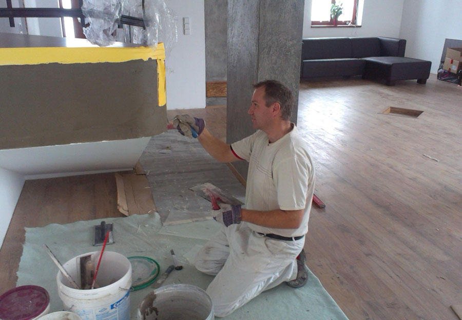

Služby
Řemeslo pro interiér, fasádu i novou stavbu.
Přehled prací, které lze řešit samostatně i v návaznosti na rekonstrukci celého bytu nebo domu.
Zednické práce
Rekonstrukce bytů a jader, omítky, betonování, bourání, obklady, dlažby a izolace.
Zobrazit zednické práceMalířské práce
Malování interiérů i fasád, stěrky, dekorační malby, nátěry a příprava podkladu.
Zobrazit malířské práceSádrokarton
Příčky, podhledy, předstěny, půdní vestavby a řešení rozvodů v nových dispozicích.
Zobrazit sádrokartonZateplení fasád
Zateplení, opravy a povrchové úpravy fasád pro rodinné i bytové domy.
Zobrazit zateplení fasádZděné domy
Výstavba z cihel, tvárnic nebo pórobetonu podle projektové dokumentace.
Zobrazit zděné domyMáte jiný rozsah?
Ozvěte se s popisem práce. Rozsah a návaznost jednotlivých profesí probereme spolu.
Otevřít kontakt
Jedna návaznost
Materiály a povrchy dávají dohromady celek.
Když práce navazují, má smysl plánovat je jako celek. Zednické úpravy, sádrokarton, obklady a finální malby tak mohou mít společný postup.